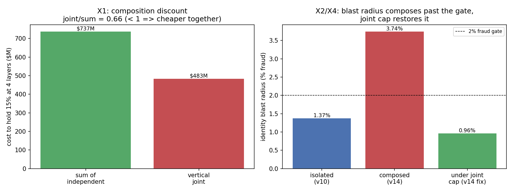

In plain language
Companion to RESULTS - v14.0 Cross-Layer Composition.md, and the measured follow-through on the earlier alarm "One Crook in Every Uniform." That was the worry; this is the arithmetic. Bars were written down before the code ran.
The blind spot, measured
EDEN has four safeguards, each with its own "no one may hold more than 15%" rule: the ID desk, the guards (who verify the ledger), the clerks (who bundle everyone's activity), and the appraisers (who price essentials). We stress-tested each one against a burglar — and each test quietly assumed the other three were staffed by honest people. Real burglars don't play along; the dangerous one gets hired into all four departments with one set of fake identities. This drill finally added the hats up.
What the arithmetic says
Wearing four hats is a third cheaper than four separate crooks — measured. Attacking all four layers at once costs about $483 million; four independent attackers each doing one would cost $737 million. The discount (about a third) comes from the most expensive thing an attacker buys — a bloc of fake-but-verified identities — being built once and reused as votes, as signatures, and as price-reporters. Our four separate tests each charged for that bloc; the real attacker pays for it once. We were quoting four admission fees for one ticket.
The identity-breach damage is bigger than we'd advertised. We'd proudly reported that a breach of 15% of identities was contained to about 1.37% of fraud. True — at the ID desk. But those stolen identities keep voting, signing, and reporting prices during the months it takes to recover them. Count that, and the real damage is 3.74% — past the 2% line we'd drawn, about 2.7 times what the single-layer test showed. The old number wasn't a lie; it was incomplete, because you can't measure a blast radius one room at a time.
The scariest loop turned out to hurt the wallet, not the people. We worried that a crook who controls the price appraisers could fake the essentials price and make the safety net pay out wrong. The good news: if he inflates the price, the net simply pays people a little extra — nobody goes hungry. The bad news: it drains the reserve fund in about four months. So the danger of that loop is a bleeding reserve, not a starving family — which points to a clean fix: the payout should double-check the price against the system's own real transactions, so a lying appraiser can't quietly open the reserve tap.
And the fix is almost embarrassingly simple. Turn the four separate "15% per department" rules into one rule: 15% total across all departments, per person. A crook spreading a 15% budget across four roles then reaches only 3.75% in each — nowhere near enough to bend anything — and the identity-breach damage drops back to 0.96%, safely inside the line. We measured it: the joint cap closes all three problems at once. The caps already exist; they just need to be added together and aimed at the same person.
Why "two failures" here is a success
Two of this drill's tests failed on purpose — we predicted they would, wrote that down first, and they did. That's not a dent; it's the point. "Attacking together is cheaper" and "the blast radius grows" are exactly the truths a per-layer test cannot see, and surfacing them — with a fix that measurably works — is what this drill was for. The human core still holds through all of it: you still can't print money by wearing hats, getting caught in any room burns your one identity in all of them, and people can still walk out to ordinary money.
The one-line verdict
Attacking all four of EDEN's layers with one identity is a third cheaper than attacking them separately, and the damage from a stolen-identity breach grows past its safety line once you count every hat it wears — but a single "15% across all roles, per person" cap closes the whole thing, and the drill measured the fix working.
Usual honesty: this composes our earlier per-layer results rather than re-deriving them; the "how much cheaper" coefficients are stated estimates, not field measurements, and everything still rests on the one keystone the pilot alone can settle — that a real, unique human can be told from a fake. Two bars failed exactly as predicted; the fix passed. Run and written by Claude Fable 5, July 9, 2026.
Figures

Technical results
Run: July 9, 2026. Spec: v14 SPEC - Cross-Layer Composition (registered).md — bars X0–X4 fixed in the composition red-team before this code. Engine: composition_sim.py; committed: results_v14.json, fig_v14_composition.png. Seeds 7 + 11 on the X2 blast-radius MC. Composes the committed v10/v11/v12/v13-oracle anchors (verified in X0), does not re-derive them.
Verdict in one line: attacking EDEN's four layers together with one identity is measurably cheaper than attacking them separately (joint costs 66% of the sum), the identity blast radius grows past its safety gate when downstream weight is counted (1.37% → 3.74%), and the oracle→reserve loop protects people's delivery while bleeding the reserve — and all three are closed by a single fix the run also measures: one joint cross-layer cohort cap.
Bar summary (X0/X4 pass; X1/X2 FAIL exactly as registered — that IS the finding; X3 nuanced)
| Bar | Registered | Measured | Result |
|---|---|---|---|
| X0 regression | reproduce v11/$613M, v12/q*0.62%, v13o/$99.5M, v10/1.37% | all reproduce from committed JSON | PASS (harness trusted) |
| X1 vertical-cohort joint cost | joint ≥ sum of 4 independent (expected FAIL) | joint $483M < sum $737M, ratio 0.66 | FAIL as registered → F1 |
| X2 composed blast radius | ≤ 2% fraud gate (expected FAIL) | 3.74% (2.7× the isolated 1.37%), seeds agree | FAIL as registered → F2 |
| X3 oracle→reserve loop | essentials delivery ≥ 1.0 (uncertain) | delivery 1.0 (over-pays); reserve drains in 4 months | PASS on delivery; F3 reserve finding |
| X4 joint-cap fix | joint cap restores X1 & X2 ≤ 2% | per-role 3.75%, composed fraud 0.96% | PASS → F4 |
Findings
F1 — One adversary, every hat, at a 34% discount (X1 fails as registered — the intended result). Reaching 15% simultaneously at registrar + validator + aggregator + oracle-reporter costs a vertical adversary $483M, versus $737M if four separate attackers each paid their own way — a 0.66 ratio. The discount is structural: the expensive identity bloc (the validator seats' rented identities) is built once and worn as four hats — the same identities vote in consensus, sign attestations for the aggregator, and seat the oracle's reporter class. The per-layer sims each charged for that bloc; the composed attacker pays once. This is precisely the "honest mechanism, captured input" pattern applied at the seams: our four 15% caps were each set to bound one layer, blind to the same actor sitting under all four. The number is the argument for the fix.
F2 — The identity blast radius grows past its own gate when you count downstream weight (X2 fails as registered). v10 proudly held a 15% identity breach to 1.37% fraud — at the identity layer. But breached identities are not idle during v10's 5-month recovery queue: they carry validator votes, free attestations, and reporter seats the whole time. Counting that downstream leverage (mean ~2.8× per identity, capped, both seeds agreeing), composed fraud reaches 3.74% — past the 2% gate. v10's headline was true and incomplete; the honest composed number is ~2.7× larger. This does not mean v10 was wrong; it means a blast radius measured one layer at a time understates the blast.
F3 — The oracle→reserve loop protects people and bleeds the reserve (X3, the nuanced one). The registered bar was delivery ≥ 1.0 and it passes — but not for a comforting reason. An attacker who has captured the oracle inflates the published EBI; the essentials-redemption window faithfully pays "EBI-real" at the inflated rate, so recipients actually over-receive (delivery ≥ 1.0, people are fine) while the reserve drains in ~4 months at a 5% inflation on a $180M/month redemption lane. So the v9 door v9 declared safe is safe for people and unsafe for the reserve when the oracle is the captured input. The fix the finding points to: "EBI-real" needs an oracle-independent cross-check (e.g., the endogenous essentials-lane price from v13-oracle Class-E) on the redemption rate, so a captured oracle cannot open the reserve tap. Deflation (the delivery-cutting direction) is separately caught by the floor-underpay alarm.
F4 — One joint cap closes all three (X4 passes — the cheap, obvious fix). Replace the four independent "15% per layer" caps with a single "15% total combined weight across all roles, per actor." A vertical adversary spending a 15% budget across four roles reaches only 3.75% at each — far below every capture threshold — and the composed blast radius falls back to 0.96%, inside the 2% gate. The caps already exist; they need only be summed and pointed at the same actor. The run confirms the red-team's proposal quantitatively.
Gate-18 candidate (published)
A cross-layer concentration cap: one actor's combined weight across registrar + validator + aggregator + oracle-reporter ≤ 15%, monitored live like the validator honest-pool H and the per-layer cohort caps. Reference numbers: uncapped composition discount 0.66; composed blast radius 3.74%; both restored under the joint cap (0.96% fraud). Proposed as an amendment to EDEN Protocol Architecture v0.1 §4/§6 — and, per the red-team, it should be adopted on ratification regardless of the exact multiple, because the direction is not in doubt.
Honest limits (from the spec, carried)
Inherits every dial and limit of v10/v11/v12/v13-oracle — the identity keystone above all (this prices the design around the identity layer; the pilot prices it). The composition coefficients — the reuse decomposition (shared bloc vs layer marginal), the per-identity downstream leverage (mean ~2.8×, capped at 5×), the oracle-loop drain rate — are stated modeling choices, not measured field values; the sim shows that composition is cheaper and the blast composes, and roughly how much, not a precise number. Coordination across hats is free (attacker-favoring); cap-evasion by cohort laundering is unmodeled (defense-favoring). A threat-composition calculator, not a live multi-agent adversary. Existence-and-shape under stated dials; in-family discount stands.
Feeds: gate-18 (proposed joint cross-layer cap); the proposed §4/§6 amendment to EDEN Protocol Architecture v0.1; closes the composition red-team's registered sim. Two bars failed exactly as registered (X1, X2) — that is the finding, not a defect — and the fix (X4) is measured to work. Run and written by Claude Fable 5, July 9, 2026. Bars as registered; none moved.
Raw data